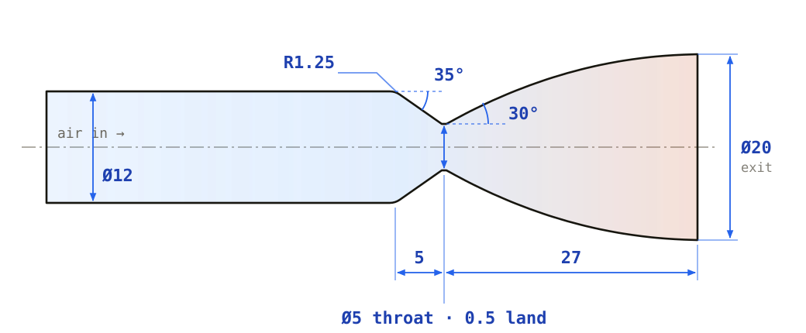

Multi-Nozzle Lunar Lander Test Hardware
As mechanical design lead on a 7-person, 7-university team, I designed the nozzles and mounting hardware for a NASA research proposal: the first experimental comparison of how single-, dual-, and quad-engine lunar landers blast regolith. Written and submitted through NASA's L'Space Proposal Writing and Evaluation Experience.
The Nozzle
I designed the nozzle in SolidWorks as a converging-diverging bell: a 12 mm inlet that narrows at 35° to a 5 mm throat, then expands along a 27 mm bell to a 20 mm exit. The flow is supersonic but non-reacting: compressed air, not combustion. Room-temperature air accelerates to supersonic speed just past the throat, and this cold-flow jet stands in for a lander engine's exhaust at lab scale, so the plume can be studied safely without burning any propellant. Every test configuration uses identical copies of this one part, so any difference in results comes from the nozzle layout, not the nozzles themselves.

Swappable Mounting Plates
The nozzles pass through acrylic mounting plates: a bar for the dual-nozzle configuration and a square plate for the quad. Changing nozzle count or spacing means swapping in a different plate, not rebuilding the rig. The regolith sits in a 3D-printed PETG tray below. Everything was designed to be fabricated in-house with a university machine shop and 3D printers.
Why It Matters
When a lander fires its engines near the Moon's surface, the exhaust blasts regolith outward at high speed, which can damage the lander and anything already on the ground. Future landers will use multiple engines, and simulations predict that interacting plumes can raise local ejecta mass flux by up to six times compared with a single engine. Every published experiment so far has used a single nozzle, so those predictions have never been checked against real data. The proposed campaign would measure ejecta velocity, spray angle, eroded mass, surface pressure, and crater shape for 1, 2, and 4 nozzles at three spacings each.
How the Concept Evolved
Early in the program, the team's concept was a test inside a vacuum chamber. The final proposal moved to a rig in open air running on regulated compressed air, testing several nozzle layouts, heights, and throttle settings. The nozzle and plate hardware above was designed for that final rig.
What I'd Change
Looking back at the gas dynamics, the nozzle fits the original vacuum concept better than the final open-air rig. A 16:1 bell expands the flow to about Mach 4.5, which suits a vacuum chamber. Exhausting into open air, it would need roughly 4,000 psi of supply to expand cleanly. On regulated shop air around 100 psig, the throat still chokes and the flow goes supersonic, but it would separate from the wall near an area ratio of 3, leaving most of the bell unused and the jet unsteady.
For the open-air rig I'd resize to an expansion ratio of about 1.7:1 (a ~6.5 mm exit for the same 5 mm throat) and shrink the throat to cut air consumption. At 100 psig, each 5 mm throat would pass about 64 SCFM, over 250 SCFM for the quad configuration, far more than a typical shop compressor supplies. A throat near 2 mm brings that down to about 10 SCFM per nozzle.
The Proposal
Beyond the hardware, I contributed to the 12-month Phase B–F development plan, the $6,700 budget, the quad chart, and the New Technology Report.